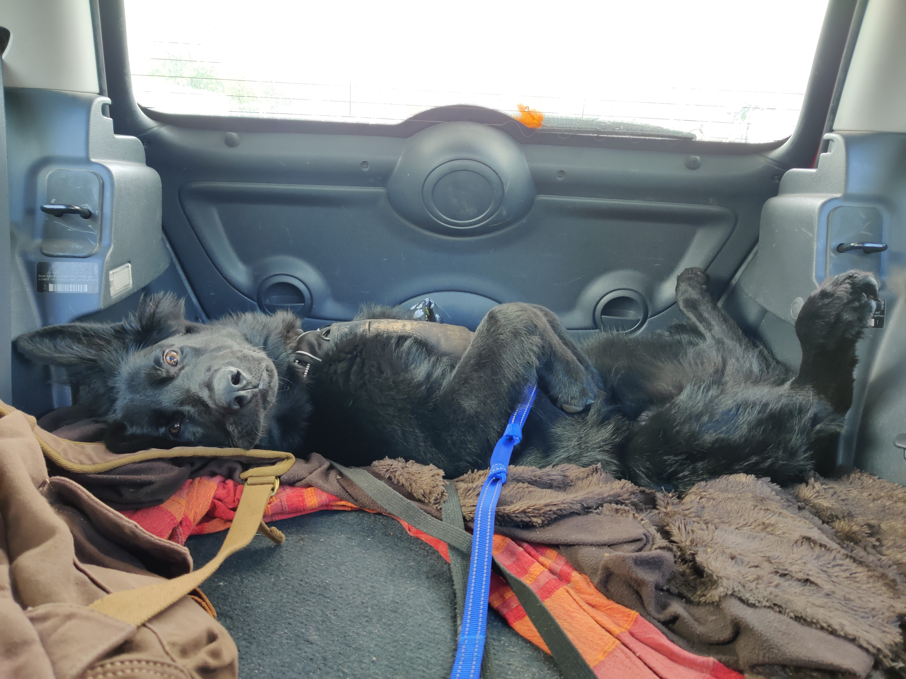
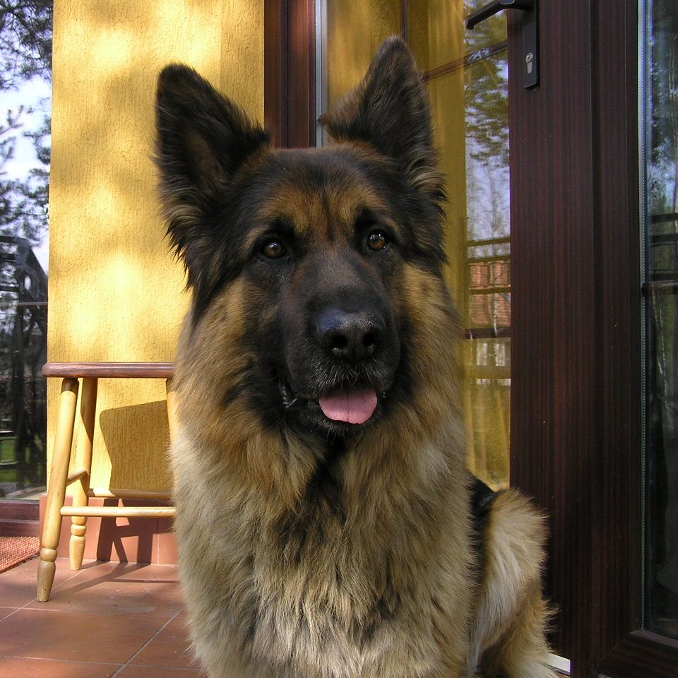
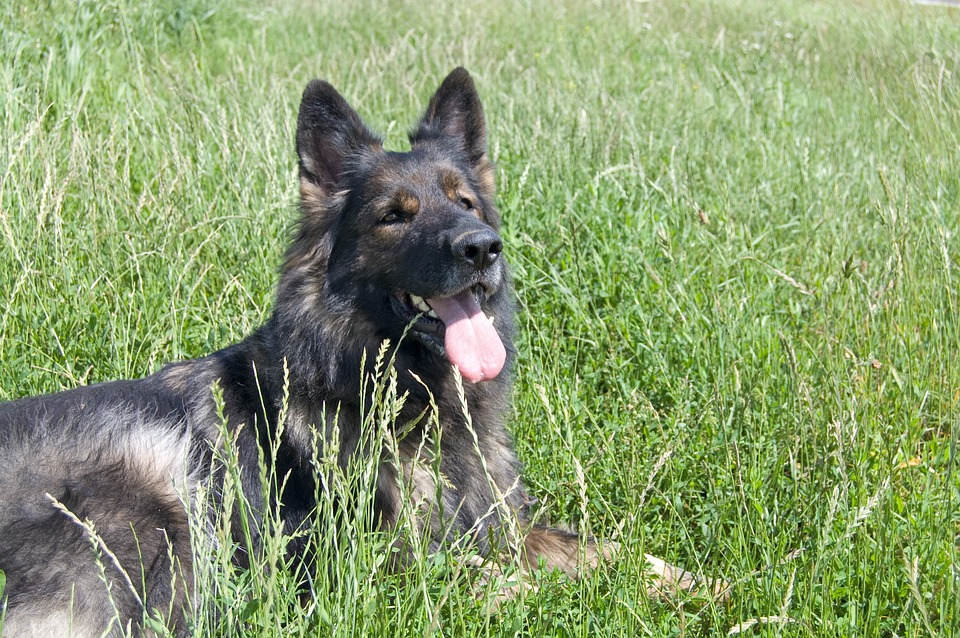

Ici, je vous ferrais part de tous mes consiels pour s'occuper au mieux de cette race de chien
Commençons tout d’abord pour mes conseils pour son entretient. Il est important que vous le brossiez au moins une fois par semaine, quelle que soit la saison, pour enlever les poils morts et laisser les sous poils respirer. Néanmoins, en été, ne lui rasez ou ne lui coupez surtout pas les poils. Vous pouvez bien sur effectuer quelques retouches, notamment au niveau de ses pattes, mais ne coupez jamais tout le poil de votre chien ! En effet, contrairement à ce que l’on pourrait penser, le poil les protège du froid mais aussi de la chaleur. En coupant tout son poil, votre Altdeusche Schäferhund aura bien trop chaud en été, et ne sera plus protégé par la chaleur apportée par cette saison, pouvant même certaines fois apporter la mort ! Veillez donc bien à ce qu’il conserve tout son poil. Ensuite, si vous ne le nourrissez pas au BARF vous devrez aussi lui brosser les dents une fois par semaine, pour limiter le tartre et le déchaussement de ses dents. Les os charnus repoussant l’arrivée de tartre, ce n’est cependant pas le cas des croquettes, qui sont elles bien plus molles que les os et n’empêchent ainsi pas le tartre de s’installer. N’hésitez donc pas à lui acheter une brosse à dent très tôt. Enfin, il sera aussi nécessaire de lui laver les oreilles, aussi une fois par semaine, pour empêcher l’installation de bactéries, de parasites ou d’insectes qui pourraient fortement le gêner. Pour ce faire, munissez-vous d’un nettoyant, une lotion auriculaire spécifique pour ses oreilles ainsi que d’un coton. Cependant, notez tout de même que le nettoyage des oreilles et des dents peut être désagréable et angoissant, il est donc nécessaire de l’y habituer dès le plus jeune âge. Vous pouvez aussi lui nettoyer les yeux avec du sérum physiologique (en dosettes) ou avec des solutions de lavage oculaire à usage vétérinaire, mais ce n’est pas obligatoire. Faites le surtout si vous constatez que votre chien à souvent les yeux qui coulent où semble se gratter souvent les yeux. Pour finir, il ne faut pas laver trop régulièrement le corps de votre chien, une fois tous les 6 mois est largement suffisant, il n’est d’ailleurs pas très recommandé de le laver lorsqu’il est encore chiot. N’utilisez pas non plus un shampoing trop odorant qui pourrait l’embêter et engendre des drôles de comportements chez lui.
L’Altdeutsche Schäferhund étant de base un chien très volontaire et ayant soif d’apprendre, son éducation ne sera pas très compliqué. Assurez vous de le sociabiliser le plus possible quand il sera chiot, et plus particulièrement, jusqu’à ses 4 premiers mois, la période la plus importante de sa vie. Faites-le rencontrer le plus de personnes et d’animaux possibles pour qu’il s’habitue à eux, faites-le jouer avec d’autres chiots et des chiens plus âgés, et enfin, mettez-le en contact avec beaucoup de personnes différentes. Ainsi, votre chiot sera dès son plus jeune âge habitué à ce genre de chose et n’en aura pas peur. De même, habituez-le aussi à la vie citadine très jeune, ne le laissez pas toujours dans un endroit calme et tranquille, confrontez-le aux sons et odeurs de la ville, c’est très important pour sa sociabilisation. Notez néanmoins que le processus de sociabilisation doit être démarré dès sa naissance, privilégiez donc un éleveur qui pensera à toutes ces choses-là, et s’occupera de le confronter lui-même aux gens et aux bruits. Si vous ne faites pas tout cela, votre chien pourra rester craintif toute sa vie, et cela pourrait aussi créer des réactions dangereuses pour lui comme pour vous.
Enfin, pour l’éducation de manière plus générale, l’Altdeutsche Schäferhund a soif d’apprentissage, il sera toujours partant pour apprendre de nouvelles exercices et de nouveaux tours, n’hésitez donc pas à lui apprendre de nombreuses choses dès son plus jeune âge. Mais il faudra aussi vous montrer ferme avec lui, comme avec n’importe quel chien de berger, ne laisser pas n’importe lequel de ses caprices passer sous prétexte qu’il est encore mignon. Un peu têtu, priorisez la méthode positive pour son apprentissage, les méthodes traditionnelles ne ferraient que retarder son éducation.
Dans cette partie, je vais vous parler de conseils plus généraux, que vous n’êtes pas obligés de respecter pour que votre chien se porte bien tout au long de sa vie, mais qui y aident grandement.
Tout d’abord, je ne peux que vous recommander de nourrir votre chien au BARF une alimentation se voulant plus naturelle, reproduisant la manière dont se nourrissent les loups. Voici ci-dessous un tableau expliquant la composition du « BARF »
| Elément | Pourcentage | Explication | Exemple |
|---|---|---|---|
| Viande | 50% de la ration | Il s’agira de donner de la viande crue à votre chien, car celle-ci contient beaucoup de chose dont le chien a besoin, dont des protéines et gras en fonction des morceaux qui lui sont nécessaires | Viande de poulet, lapin, agneau, veau, canard, bœuf … Vous pouvez aussi lui donner du poisson une fois par semaine comme du hareng ou bien des cailles ou du saumon. Evitez néanmoins le porc et le sanglier, pouvant transmettre des maladies à votre chien. |
| Os charnus | 40% de la ration | Tout comme la viande, votre chien aura aussi besoin d’os pour ses dents, son ossature car ceci contient des minéraux dont calcium et phosphore. Il s’agira donc de lui donner la même viande que celle citée précédemment, mais cette fois-ci entourant un os | On pourra ainsi lui donner encore une fois du poulet, de l’agneau, du lapin, de la dinde, … |
| Abats | 10% de la ration | Votre chien aura aussi besoin d’abats pour lui apporter les vitamines et omégas qui lui sont nécessaires | Vous pouvez lui donner de la dinde ou du bœuf par exemple |
| Légumes ou fruits mixés | au minimum 20g par 10kg de chien | Il y a plusieurs controverses à ce sujet. Certaines personnes maintiennent que le chien est omnivore, qu’il a besoin de légumes pour bien se développer, tandis que d’autres, eux, pensent que cela ne leur est pas nécessaire. D’autres types d’alimentations se sont ainsi créés, comme le « whole prey » ou encore le « raw feeding » , créant ainsi une sorte de BARF sans légumes. Cependant, dans le BARF, nous voulons récrée au mieux la proie que dévore le loup, et dans cette même proie, il y a de la panse dans son estomac, donc des légumes. Ainsi, dans la BARF, nous donnons des légumes au chien | Il faut réaliser un mix de légumes : 50 % de légumes à feuille, et 50% de légumes racines OU 45% de légumes fleurs avec 50% de légumes racine et 5% de fruits.
|
| Huiles/Compléments | Cela dépend de ce que vous lui donnez | Comme spécifié, ce sont des compléments, vous n'êtes donc pas obligés de lui donner. Cependant, ils peuvent s'avérer utilise lorsque votre chien manque d'un nutriment en particulier | Vous pouvez lui donner de l'huile de saumon, de l'huile végétale (tournesol), des algues, de la levure de bière, ... |
Pour plus de renseignements à ce sujet, vous pouvez aussi consulter ce site



Vous pouvez trouver ici diverses photos de l'Altdeutsche Schäferhund
Vous souhaitez revenir sur la page d'acceuil ? Cliquez ici